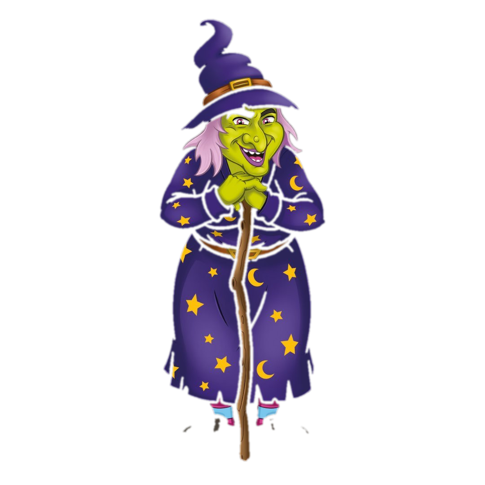
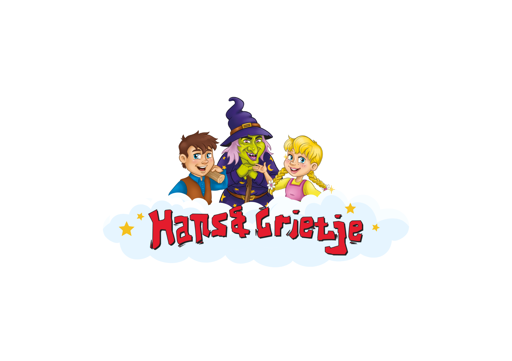
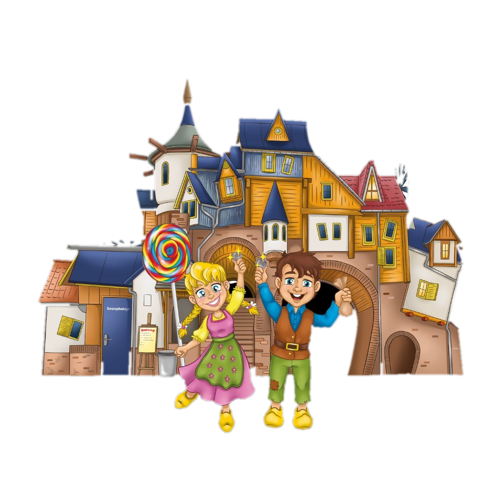

Hans & Grietje
De heks bewaakt het dashboard — voer de toegangscode in

Pannenkoekenhuis en Speelpark — sociale-mediaprestaties in één overzicht
Elk bolletje is een post, in chronologische volgorde. Zweef eroverheen voor de post, klik voor alle details. De stippellijn is het gemiddelde.
Totaal volgers per maand
Nieuwe volgers per maand
Klik op een post voor alle details.
Weergaven per post, in tijdlijn
Elke post op zijn plek in de tijd; hoe verder naar rechts, hoe meer kijkers. Klik op een bolletje voor de post.
Data uploaden
Upload elke week gewoon je Excel- of PDF-export — het dashboard herkent zelf of het Facebook of Instagram is en verwerkt de posts automatisch.
Excel-bestand (.xlsx)
Rechtstreeks uit Hootsuite of Meta
PDF-bestand (.pdf)
Wordt automatisch uitgelezen
Volgers per maand
Dit staat niet in de export, dus vul dit maandelijks even zelf aan uit Meta/Instagram Insights.
De data staat alleen lokaal in deze browser. Exporteer een back-up om over te zetten naar een andere computer of te delen met een collega.
Alle posts beheren
Kopieer de prompt hieronder en plak hem in Claude (of een andere AI) voor de analyse.
Widget toevoegen
Stel zelf samen: welke metriek, van welk platform, hoe gegroepeerd, en in welk type grafiek.

Hans & Grietje Pannenkoekenhuis en Speelpark · Zeewolde